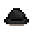
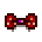

Teljesítmények
A teljesítmények a játékos menüben vannak feltüntetve, a "Gyűjtemények" fülben, a "teljesítmények" fülecske a menü bal alján található. Ha a játkot a Steamről játsza a játékos, akkor a Steam teljesítményei között is megtalálhatóak ezek a mérföldkövek. Van néhány különleg teljesítmény, amely csak Steamen elérhető.
A teljesítmények speciális jutalmakat oldhatnak fel a játékon belül. Steamen a mérföldköveket csak egyszer lehet megszerezni, de a jutalmakhoz minden játékban külön kell megszerezni a teljesítményeket.
Az olyan teljesítmlnyek, amelyek a játékos még nem oldott fel, azok szürke színűek a menüben. Vannak olyan teljesítmények, amelyek nem jelennek meg addig, míg azokat nem érte el a játékos.
A legtöbb teljesítmény egy-egy különleges kalapot old fel, amelyeket a romos házban lehet megvásárolni a Tufanedv-erdőben.
Teljesítmények listája
Teljesítmények amiknek nincsen játékbeli ikonjuk azok Steam-specifikus teljesítmények.
| Steam ikon | Játékbeli ikon | Teljesítmény | Leírás | Feloldja | |
|---|---|---|---|---|---|
 |
 |
Zöldfülű | Szerezz 15.000g-t |  |
Régi jó sapka |
 |
 |
Tehenész | Szerezz 50.000g-t |  |
Szerencsés masni |
 |
 |
Telepes | Szerezz 250.000g-t |  |
Menő sapka |
 |
Milliomos | Szerezz 1.000.000g-t |  |
Keménykalap | |
 |
 |
Legenda | Szerezz 10.000.000g-t (Titkos teljesítmény) | Sombreró | |
|
Teljes Gyűjtemény | Teljesítsd a múzeumi gyűjteményt. |  |
Cowboy kalap | |
 |
|
Egy Új Barát | Érj el valakivel 5 szíves barátságot. |  |
Pillangó masni |
 |
|
Legjobb Barát | Érj el valakivel 10 szíves barátságot. |  |
Egérfül |
 |
 |
A Szeretett Gazda | Érj el 8 emberrel 10 szíves barátságot. |  |
Macskafül |
 |
Klikkesedés | Érj el 4 emberrel 5 szíves barátságot. |  |
Tiara | |
 |
|
Hálózat | Érj el 10 emberrel 5 szíves barátságot. |  |
Mikulás sapka |
 |
Híresség | Érj el 20 emberrel 5 szíves barátságot. |  |
Fülvédő | |
 |
|
Főzés | Készíts el 10 különböző receptet. |  |
Kényes masni |
 |
Pácolós Séf | Készíts el 25 különböző receptet. |  |
Szilvás kalap | |
 |
 |
Ínyenc Séf | Készíts el minden receptet. |  |
Íjászok kalapja |
 |
Séf kalap | ||||
 |
 |
Fejlődés | Fejleszd fel a házadat. |  |
Tropikapocs |
 |
A Nagybetűs Élet | Fejleszd fel maximális szintre a házadat. (2. szintesre, nem kell pince) |  |
Vadászsapka | |
 |
|
Csináld Magad | Barkácsolj 15 különböző tárgyat. |  |
Százszorszép |
 |
|
Kézműves | Barkácsolj 30 különböző tárgyat. |  |
Fuvaros kalap |
 |
|
Barkácsmester | Barkácsolj minden tárgyat. |  |
Gnóm sapka |
 |
|
Horgász | Fogj ki 10 különböző halat. |  |
Viharkalap |
 |
|
Öreg Halász | Fogj ki 24 különböző halat. |  |
Hivatalos sapka |
 |
 |
Mester Horgász | Fogj ki minden halat. |  |
Szemfedő |
 |
|
A Nagy Fogás | Fogj ki 100 halat. |  |
Dinnyés szalag |
 |
|
Kincsesláda | Ajándékozz 40 különböző tárgyat a múzeumnak. |  |
Kék fejkötő |
 |
|
Futár | Teljesíts 10 'Felhívásos' kérést. |  |
Polka masni |
 |
Nagy Segítség | Teljesíts 40 'Felhívásos' kérést. |  |
Csirke maszk | |
 |
|
Polikultúra | Szállíts le 15 darabot minden termésből. Lásd (jegyzet alul) |  |
Tehenész kalap |
 |
|
Monokultúra | Szállíts le 300 darabot egy termésből. Lásd (jegyzet alul) |  |
Női cowboy kalap |
 |
|
Teljes Szállítmány | Szállíts le minden tárgyat. |  |
Goblin maszk |
 |
Prairie King | Vidd végig a 'Journey Of The Prairie King' játékot. | Prairie King játékrendszer | ||
 |
A legalja | Juss le a legalóbb szintere a bányában. | Koponya kulcs | ||
 |
Helyi legenda | Újítsd fel a pelikán városi Közösségi központot1. | Stardew Hőse trófea | ||
 |
Joja Co. Az Év Tagja | Vedd meg az összes Joja Közösségfejlesztési tervet. | Italautomata | ||
 |
A Csillaghullók rejtélye | Találd meg az összes Csillaghullót. | |||
 |
Komplet ház | Házasodj meg és legyen két gyereked. | |||
 |
Egyedülálló tehetség | Érj el 10-es szintet legalább egy képességben. | |||
 |
Az Öt Út Mestere | Érj el 10-es szintet minden képességben. | |||
 |
A Völgy Védelmezője | Teljesítsd az összes Kalandorok Céhe által kiadott Szörny Kiírtási Célokat. | |||
 |
Fector kihívása | Játszd ki a 'Journey Of The Prairie Kinget' halál nélkül. (Titkos teljesítmény) | |||
 |
Messzi partokon | Juss el a Gyömbér-szigetre. | Papírsapka | ||
 |
|
Könyvmoly | Olvasd el az összes könyvet. | Kifutós sapka | |
 |
|
Dupla lájk | Nézz meg egy filmet. | Bolond kalap | |
 |
|
Kék szalag | Légy első helyezett a Stardew Valley Vásár versenyén. | Kék szalag | |
 |
|
Egy felejthetetlen leves | Örvendeztesd meg a Kormányzót. | Kormányzói kalap | |
 |
|
Jó szomszédok | Segíts az erdei szomszédaidnak családot alapítani. | Fehér masni | |
 |
 |
Veszély a mélyben | Juss el a 'veszélyes' barlang legaljára. | Űrsisak | |
 |
|
Végtelen erő | Szerezd meg a legerősebb fegyvert. | Végtelen korona | |
 |
|
Tökéletesség | Juss fel a csúcsra. | Junimo kalap | |
Jegyzet
Halászati teljesítmények
A Zöld Alga, a Fehér Alga és a Hínár kifogása is beleszámít a 4 horgászati teljesítménybe (Horgász, Öreg Halász, Mester Horgász és Nagy fogás). Szemét kifogása nem számít bele a teljesítménybe. A Kibővített család halainak kifogása nem szükséges a Mester Horgász teljesítmény megszerzéséhez.
Polikultúra
Pontosan 28 termés van, amelyeket le kell szállítani a Polikultúra teljesítmény megszerzéséhez (mindegyikből 15 darabot):
Tavaszi termések
Nyári termések
Monokultúra
Ahhoz, hogy a Monokultúra teljesítményt elérje a játékos, ahhoz a 33 termés egyikéből legalább 300 darabot kell leszállítania, a fenti 28 darabból bármelyiket választhatja, valamint a lenti 5-ből is.
Teljes Szállítmány
Ahhoz, hogy a Teljes Szállítmány teljesítményt elérje a játékos, a Gyűjtögetés menü Leadott Tárgyak (farm és gyűjtögetés) részén feltűntetett összes tárgyból legalább egyet kell leszállítania.
'Felhívásos' küldetés teljesítése
A heti küldetések a Speciális rendelések tábláról és a Mr. Qi speciális rendelései beleszámítanak a Futár és a Nagy Segítség teljesítményekbe.
Külső hivatkozások
- Olyan felhasználók, akik hozzáférnek a mentésükhöz, azoknak hasznos lehet a Stardew Checkup a haladásuk nyilvántartásához. Ez a https://mouseypounds.github.io/stardew-checkup/ érhető el.
- Minden platform teljesítményei itt érhetők el: